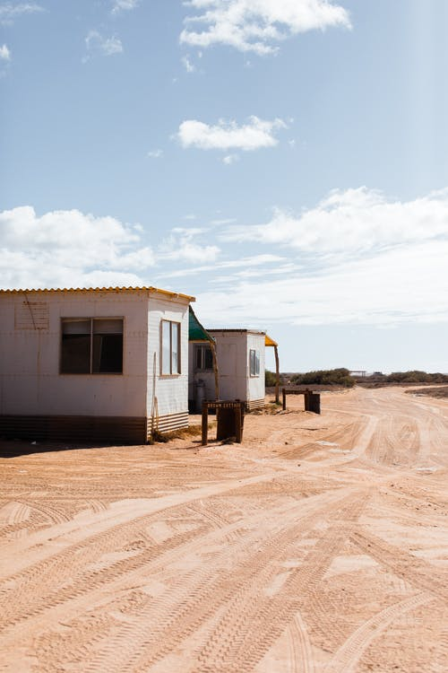

HISTORY OF DIGAWANA
Digawana is the capital city of a country called Botswana which is located in the Southern part of Africa. Digwana, which was formally known as Digauneng was proclaimed the capital city of Botswana after the country gained independence form the British government on the 30th of September 1966. The history of Digawana comes from way back before the gaining of the independence.
Way before Digawana was declared the capital city, a certain man by the name of Digaung Digawaneg who was known for his anger issues and was a survivor of the world war 1 resided in the by then very big yet almost empty village, it had a range pf about 25-30 people and loads of ploughing fields as that was the only way the people of the village were able to provide for themselves and their families.
Interesting need to know’s regarding Digawana
- Digawana is about 20km from the Zambian border and only 7km from the South African border hence the country has very good relations with its neighbouring countries.
- The city didn’t just start off by being named Digawana , its initial name was Digauneng named after Chief Digaung Digawaneng
- Digwana was declared the capital city after the country gained independence in September 1996
- In casual conversations the city is usually referred to as Digital city or DG
- The city has an average population of about 500 000(last checked in 2010)
- The city has been rebuilt 3 times
- Digawana has one of the largest stadiums in Africa where a world cup has once been held
- It is one of the most linguistically diverse city in Africa with a minimum of 10 languages which are spoken in the city
- Digton park was initially made for people of high living standards only but as the years went by the motion was changed hence any one could go to the park and socialize
- Digawana is one of the cities in the world which is known for its high safety, whether during the day or at night
Spoiler alert!
Just like there are two sides of a coin, so is Digawana! There is the corporate side where there are very large buildings where important business meetings are held , where the high court and government offices are situated and there is the jugle-ish side of the city. Where new discoveries are constantly made and where curiousness meets adventure day in day out without fail.City Attractions and exciting things to do

Attractions
- Munyumbembe’s footprint
- Statue of Chief Digaung Digawaneng
- Digawana national museum and art gallery
- Digton park
- Lonely souls attract hill
- Gignatic arrows
Exciting things to do
- Sky diving
- Quad Biking
- Archery
- Camping and a lot more breath-taking activities